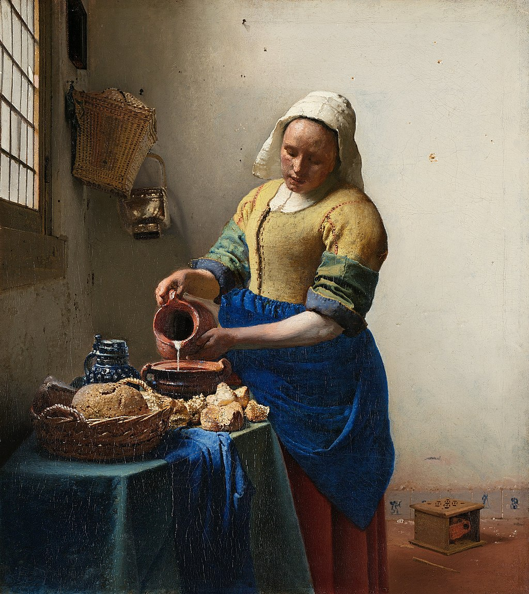

<head>
<meta charset="UTF-8" />
<meta name="keywords" content="drawing, painting" />
<meta name="description" content="drawings by Sunjy" />
<title>Sunjy</title>
<link rel="shortcut icon" type="image/x-icon" href="../../mImages/mCommon/favicon.ico" media="screen" />
<link rel="stylesheet" type="text/css" href="../../mCsses/mCommon/mCssA.css" />
<link rel="stylesheet" type="text/css" href="../../mCsses/mCommon/mCssB.css" />
<link rel="stylesheet" type="text/css" href="../../mCsses/mCommon/mCssC.css" />
<link rel="stylesheet" type="text/css" href="../../mCsses/mCommon/mCssD.css" />
<link rel="stylesheet" type="text/css" href="../../mCsses/mContent/mCssA.css" />
<link rel="stylesheet" type="text/css" href="../../mCsses/mContent/mCssB.css" />
<link rel="stylesheet" type="text/css" href="../../mCsses/mContent/mCssC.css" />
<link rel="stylesheet" type="text/css" href="../../mCsses/mContent/mCssD.css" />
</head>
<script type="text/javascript" src="../../mScripts/mContent/mContentAA.js" /></script>
<script type="text/javascript" src="../../mScripts/mContent/mContentAB.js" /></script>
<script type="text/javascript" src="../../mScripts/mContent/mContentAC.js" /></script>
<script type="text/javascript" src="../../mScripts/mContent/mContentAD.js" /></script>
<script type="text/javascript"></script> 
<script type="text/javascript">
document.write('<div class="mImgAbsolute"></div>');
/*
document.write('<p class="mFontSizeBColor" />From a white paper...</p>');
document.write('<table class="center"><tr><td>');
document.write('');
document.write('</td></tr></table>');
*/
</script>


<script type="text/javascript">
document.write('<p class="mFontSizeBColor" />The Milkmaid</p>');
document.write('<p class="mFontSizeSColor" />By Johannes Vermeer, 1658. “The Milkmaid” depicts a domestic kitchen maid, an indoor servant, and not a milkmaid who milks the cow. She is carefully pouring milk into an earthenware container, now commonly known as a “Dutch oven”.<br><br>She is a young woman wearing a linen cap, a blue apron, and work sleeves pushed up from the forearms.<br><br>Various art commentators have pointed to the possibility of symbols in the painting that suggest amorous references, while others argue to the contrary and that the maid is treated in an empathetic and dignified way.<br><br>On the floor level, are some Delft wall tiles depicting some blue figures. One of the blue characters on the tile is a cupid figure.<br><br>The cupid is one of the amorous symbols, in this work, that follows the Dutch tradition of that time when maids were depicted as subjects of male desire. <br><br>Vermeer in his art has depicted many women in interior domestic scenes, and they all include interesting everyday details, as in this example. <br><br>This painting’s domestic features include a variety of bread pieces on the table, and on the floor is a foot warmer.<br><br>On the wall by the window are further kitchen utensils. As with many other Vermeer paintings, the exact year of this painting’s completion is unknown, with estimates varying by different sources from 1657 to 1661.</p>');
document.write('<table class="center" /><tr><td>');
document.write('<br>She is a young woman wearing a linen cap, a blue apron, and work sleeves pushed up from the forearms.<br><br>Various art commentators have pointed to the possibility of symbols in the painting that suggest amorous references, while others argue to the contrary and that the maid is treated in an empathetic and dignified way.<br><br>On the floor level, are some Delft wall tiles depicting some blue figures. One of the blue characters on the tile is a cupid figure.<br><br>The cupid is one of the amorous symbols, in this work, that follows the Dutch tradition of that time when maids were depicted as subjects of male desire. <br><br>Vermeer in his art has depicted many women in interior domestic scenes, and they all include interesting everyday details, as in this example. <br><br>This painting’s domestic features include a variety of bread pieces on the table, and on the floor is a foot warmer.<br><br>On the wall by the window are further kitchen utensils. As with many other Vermeer paintings, the exact year of this painting’s completion is unknown, with estimates varying by different sources from 1657 to 1661." />');
document.write('</td></tr></table>');
</script>


